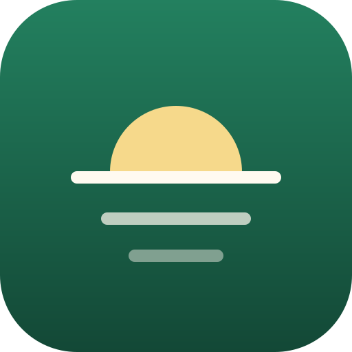

Life OS
A private, personal dashboard that runs on its owner's own computer. It brings together email, calendar, study and community work into one "Today" view: bills and deadlines due, people waiting for a reply, and the day's timeline.
Life OS is not a public service. It has one user, its owner, who connects his own accounts and the accounts of family members who choose to sign in.